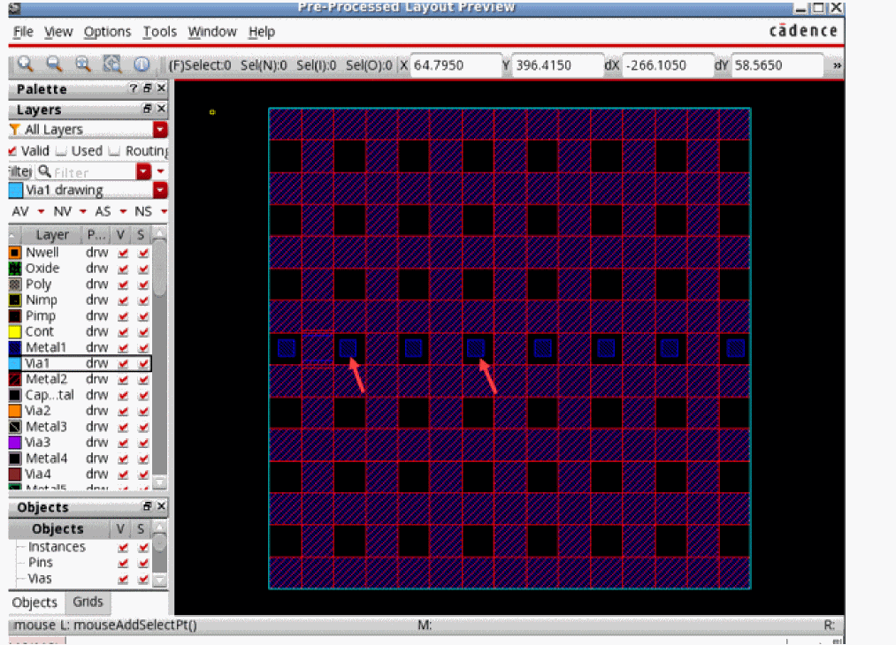

Specifying Options to Remove Dangling Shapes
If the layout contains dangling shapes, you can specify rules in the Remove dangling shapes section of the Simplify layout for EM simulation form to remove those before sending the model to the simulator.
To add a new rule to remove dangling shapes based on their size from one or more layer-purpose pairs in the layout:
- Select a layer-purpose pair from the Lpp drop-down list.
-
In the Min Layer Size field, specify the minimum size of shapes you want to retain on the layer. The tool removes any shape smaller than the specified size.
For example, if there are floatingmetal1shapes smaller than10x10microns, you can create a rule for themetal1drawing layer-purpose pair to remove all shapes less than 10 microns, as pointed by the red arrows in the following example of a pre-processed layout.
 - Click Add to create and add the rule to the list in this section.
Related Topics
Specifying Shape Simplification Options for IC Layouts
Specifying Options to Change Instance Masters
Specifying Options to Skip Shapes on Selected LPPs
Specifying Options to Merge Shapes
Specifying Options to Smooth Shape Steps
Return to top